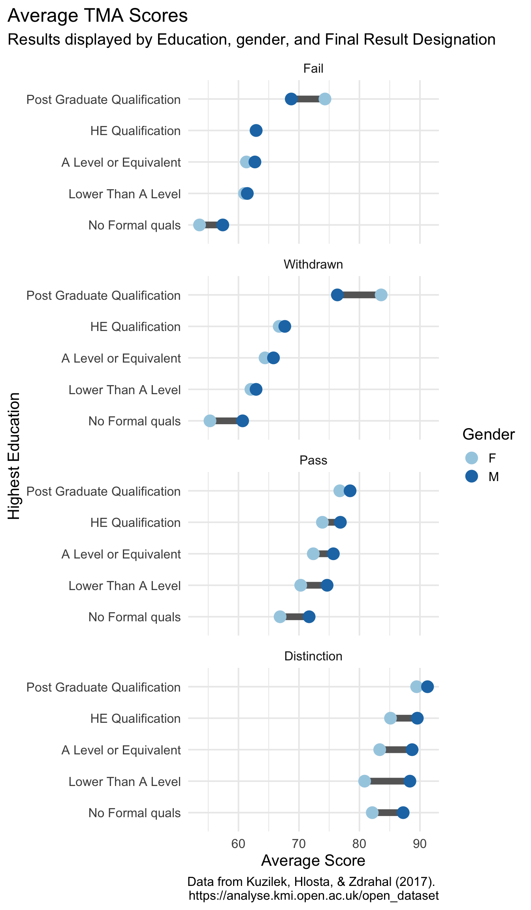
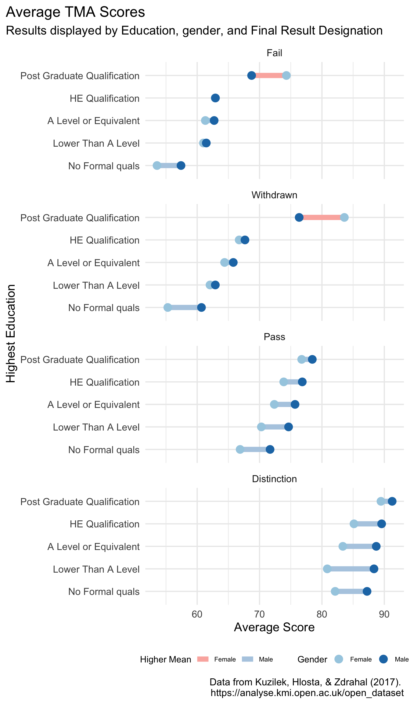

Creating new visualizations through joins
An exploration of Kaggle’s Open University Learning Analytics Dataset
Assigned 1/23/19, Due 1/30/19
Background
For this homework we will use data from kaggle. Kaggle is an online data science platform that began as a competitive platform for predictive modeling problems. Private organizations would offer a prize, usually in the range of $25K-$100K, for the individual or team that could provide the best predictive model for their problem. This is still a primary function of the website (see active competitions here), but the it has grown and is now also a place to share datasets, compete in open competitions (where you can see others code), and generally learn different facets and approaches to data science in an applied way.
Getting Started
You can download the data we’ll use for this homework either from kaggle (requires you create an account with kaggle) or directly from the organization. The latter link is worth examining to learn more about the data, regardless.
A total of seven datasets (tables) related to an online learning analytics project should be included with your download. A number of keys link the various sources of data. I recommend reading through the documentation provided by the organization to better understand these keys.
Assignment
The primary components of this assignment are highly open-ended. These are to
- Use at least 3 mutating joins
- Use at least 1 filtering join
- Produce at least 3 data displays
Following the completion of these requirements, please reproduce the following figure.

Extra credit
For one point extra credit, modify the lines so the plot looks like the below
